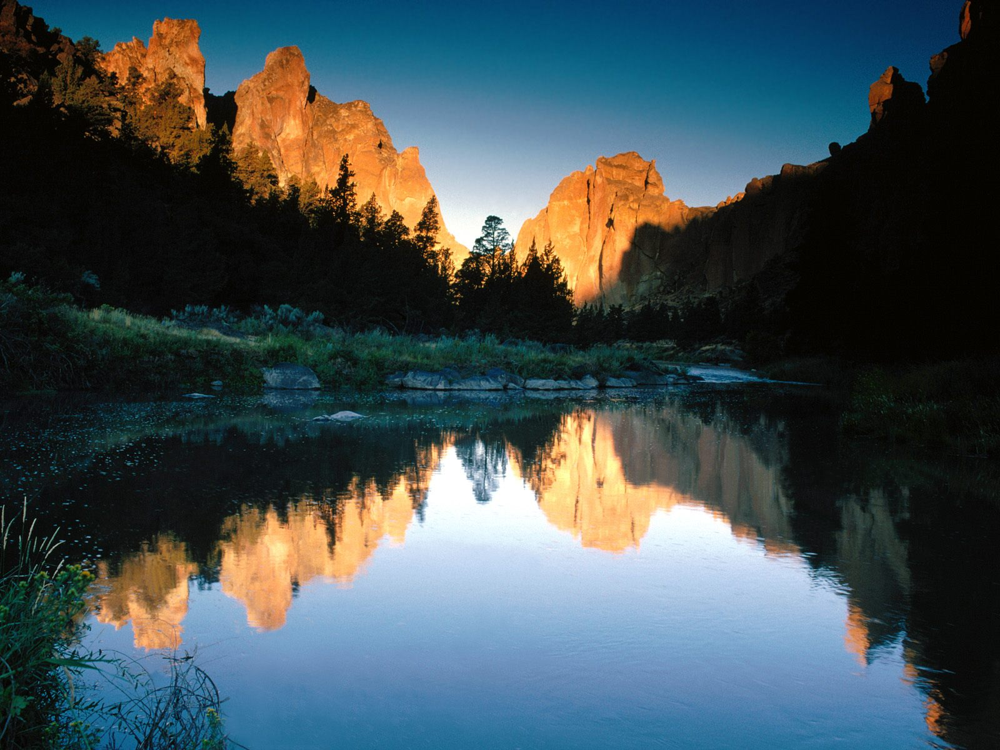
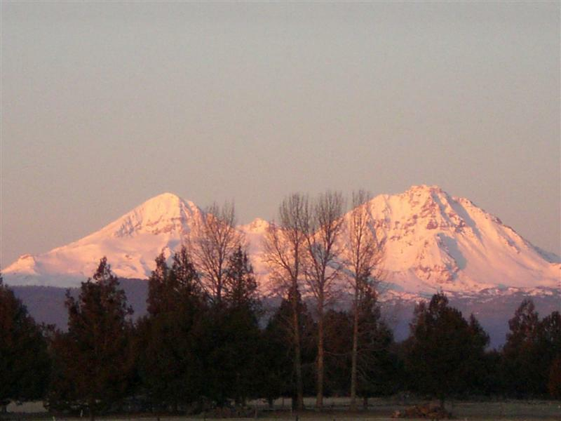
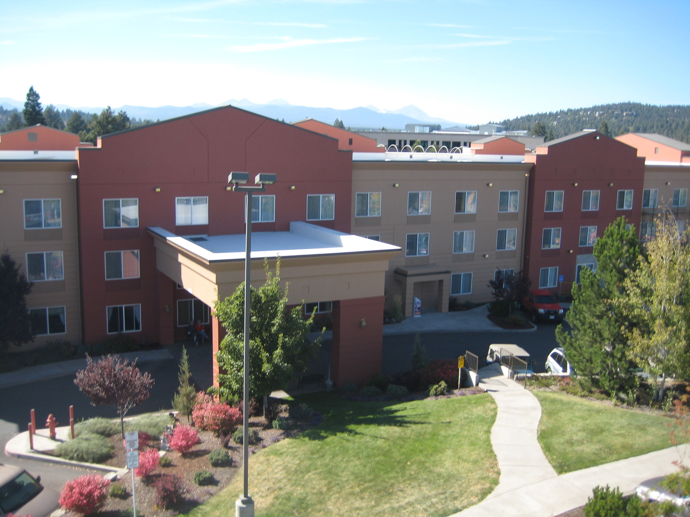
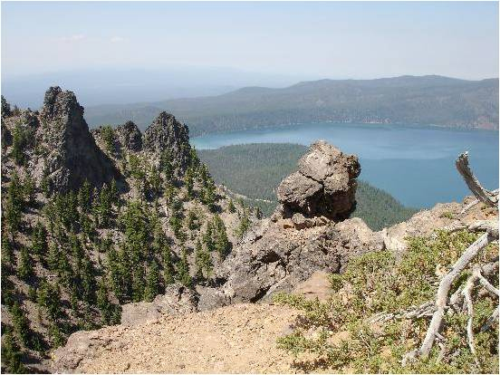
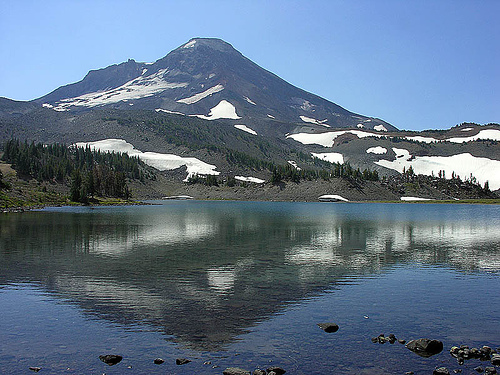

Welcome to ASIC 2010
The Ninth Annual Summer Interdisciplinary Conference, held at the Phoenix Inn Suites in Bend, Oregon, Saturday, July 31 – Thursday, August 5, 2010.

Bend, Oregon, host city for ASIC 2010.
The hotel is a few blocks from the town park and the Deschutes River, and close to restaurants and other points of interest in Bend. Bend is the center of a region of Oregon offering many outdoor activities. See also visitbend.com.
ASIC 2010 occurs just prior to two closely related meetings held in Portland, OR: the 2010 Annual Meetings of the Society for Mathematical Psychology, August 7–10, and the 2010 Annual Meetings of the Cognitive Science Society, August 8–11 (Portland is about 2.5–3 hours by car from Bend). We were pleased that the Cognitive Science Society sponsored an award for the Best Student Paper given at ASIC, consisting of a $250 prize and a complimentary membership in the Society for the following year.
The time slot between ASIC and these meetings allows cyclists to tour from Bend to Portland, and those with cars to visit the Oregon coast or other points of interest in between.
Richard M. Shiffrin of Indiana University – Bloomington is the organizer. Email correspondence should be directed to shiffrin@indiana.edu or mailed to Richard M. Shiffrin at Indiana University (see the Contact tab for the address).

The high desert landscape around Bend.
About the conference
The subject matter of ASIC is interdisciplinary, within the broad frame of cognitive science. ASIC uses the successful format of previous ASIC and AIC conferences: days are free for leisure activities and discussions among participants, and talks and posters are in the later afternoon and early evening, followed by dinner. The conference is open to all interested parties, and an invitation is not needed to attend.
Conference aims
The conference covers a wide range of subjects in cognitive science, including modeling of cognition; neuroscience and cognitive neuroscience; psychology (perception, psychophysics, attention, information processing, memory and cognition); computer science and artificial intelligence; machine intelligence and learning; methodology and statistics; linguistics, psycholinguistics and computational linguistics; and philosophy of mind and cognitive science.
Conference format
Lodging is at the Phoenix Inn, and the meetings and conference dinners are at the Old Stone Church (except Sunday, when a poster session is held at the Phoenix Inn). There is a single speaking session each day except Sunday. The conference starts with registration and a reception from 15:30–16:15 on Saturday, July 31. On subsequent days (except the poster day) there are drinks and light snacks from 16:00–16:15, followed by a session of seven spoken presentations including a mid-session drink break.
This format frees most of the day for activities with colleagues, family, and friends. The time frame allows day trips to nearby sites, but arrange to return in time for the sessions.
Registration
You are not officially on the request list for presenting research (talks or posters) until you submit the registration fee, preferably by PayPal.
This year's fee is slightly larger than usual because it includes four conference dinners, including the final-day banquet. It also pays for rental of the Old Stone Church, equipment rentals, and snacks and drinks at conference breaks.
Fee schedule (US dollars)
| Payment window | By check or PayPal |
|---|---|
| Prior to Jan. 1, 2010 | $200 |
| Jan. 1 – March 1, 2010 | $250 |
| After March 1, 2010 | $300 |
In addition to the registration fee per person, you may purchase additional guest vouchers for other persons attending the opening reception and/or final banquet.
How to pay
- Online by PayPal (preferred).
- Send a check for the correct amount to ASIC 2010, c/o Richard M. Shiffrin, Psychology Dept., Indiana University, Bloomington, IN 47405.
Lodging
A block of rooms sufficient for our conference needs is held at the Phoenix Inn Suites in downtown Bend, convenient to restaurants, the downtown park, and the Deschutes River.

The Phoenix Inn Suites, downtown Bend.
Hotel website: phoenixinn.com/bend. The inn offers a complimentary continental breakfast buffet. Lodging reservations should be made as early as possible after February 1, 2010 (the inn does not accept reservations more than six months prior to the start date). Bookings can be made by phone: toll-free (888) 291-4764, or (541) 317-9292. Reservations email: reservations601@phoenixinn.com.
Rates
Lodging prices (per room, not person) are $114 for a King room and $124 for a double Queen room. The inn has a 24-hour cancellation policy, so there is no cost to reserving early, and doing so will guarantee a room at the conference rate.
Dining
On four nights — Saturday, Monday, Tuesday, and Thursday — there are catered dinners for the group at the Old Stone Church, immediately following the talks.
The charges for these four dinners are included in the registration fee. On Sunday and Wednesday, participants are free to sample any of the many local restaurants. An extended continental breakfast is available as part of the lodging fee at the Phoenix Inn. Most participants will be away during the daytime, so lunches are not arranged as part of the conference. The Thursday evening dinner is the conference banquet, with beer and wine included.
Please indicate on the registration page the number in your group who require vegetarian meals; for other special dietary requirements, email the organizer directly. Each day the conference begins with light snacks and refreshments at 4:00–4:15, followed by talks, with a 15-minute break and more drinks about midway through (around 6 PM). The first day of the conference (July 31) has a reception with wine, beer, and more elaborate snacks from 3:30–4:30.
Travel
Bend is in central Oregon, 175 miles southeast of Portland, just east of the Cascades and the Three Sisters Wilderness Area.
The Deschutes River runs through Bend, the Newberry Crater and Volcanic Monument are just to the southeast, and Smith Rock State Park — one of the world's premier climbing destinations — lies 25 miles to the north.
Many attendees will want a car to visit nearby attractions. Bend has an airport, but attendees planning to visit Portland for the two succeeding conferences might prefer to fly into Portland and drive to and from Bend.
Maps can be downloaded free from visitbend.com, and detailed travel information is also available there.
Activities
The Bend area has many options for tourism and outdoor adventure: hiking, mountain climbing, rock climbing, road and mountain biking, rafting and white-water kayaking, visits to volcanic monuments, fishing, golfing, ballooning, and more.
Climbing, scrambling, and hiking nearby peaks
A range of volcanic mountains lies just west of Bend, particularly suited to ASIC attendees — a few can be climbed in time for a return by 4:15 for the sessions, and more can be climbed in one day before or after ASIC. These are volcanic mountains, often with loose rock and scree, and standard routes are popular and non-technical, though weather and lightning should be watched.
Closest peaks, south to north: Mt. Thielsen, Mt. Bachelor, Broken Top, South Sister, Middle Sister, North Sister, Mt. Washington, Three Fingered Jack, Mt. Jefferson. For the more adventurous, Mt. Hood and Mt. St. Helens (farther north, in SW Washington) offer exceptional climbing, but must be climbed before or after ASIC. Mt. Bachelor is a feasible one-day option; South Sister (5.5 miles, 4,900 ft of steep, non-technical climbing with lots of scree) is possible but long for a same-day return.
Rock climbing
Smith Rock State Park, about 23 miles north of Bend, offers one of the world's greatest climbing destinations in a relatively compact setting — over 2,000 established routes at all levels of difficulty, both single- and multi-pitch, about half bolted and half traditional. As usual, ASIC arranges for at least one climbing guide to be available for the entire week, with a group outing for everyone from beginners to experts.
Hiking, biking, and more
Numerous hiking trails run near Bend and into the Sisters Wilderness, from easy walks to longer treks; the Deschutes Canyon and Deschutes Wild River are popular destinations. Rafting, kayaking, and paddling are available on the Deschutes and other rivers, and there is excellent mountain and road biking throughout the region.
Bicycle tour to Portland

A post-conference bicycle tour from Bend to Portland was organized for those continuing on to the Portland meetings.
A bicycle tour from Bend to Portland was arranged for those attending the Cognitive Science and/or Mathematical Psychology conferences in Portland (August 7–11). Participants left on August 6th and rode for two or three days, covering 160–200 miles primarily through national forest, with roadbike rentals arranged in Portland and transported to Bend.
Other options
Fishing, boating, golfing, caving and spelunking, swimming, scenic drives, helicopter tours, museums, and spas round out the options — see visitbend.com for details.
Climate

Bend's high desert climate: hot, sunny days and cool mornings and evenings.
Bend has a high desert climate. Humidity is always low; days tend to be hot (especially in the sun) and mornings and evenings quite cool. Sun cream is essential, as it will probably be sunny throughout your stay.
Contact
Email is preferred for all correspondence.
Conference organizer
Rich Shiffrin
Indiana University – Bloomington
shiffrin@indiana.edu
Tel: 812-855-4972 · Fax: 812-855-9871
Address correspondence to
Annual Summer Interdisciplinary Conference (ASIC 2010)
c/o Prof. Richard Shiffrin, Psychology Department
Indiana University, 1101 E. 10th St., Bloomington, IN 47405
Webmaster / conference coordinator
Please direct questions concerning the website to:
Ruth Eberle
Indiana University – Bloomington
reberle@indiana.edu
Muhammad Nubli Mohd Kasa
Indiana University – Bloomington